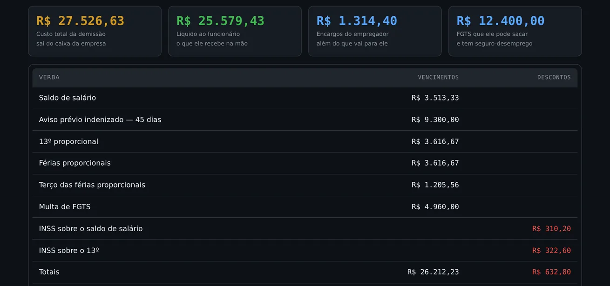

O que já é de graça
A conta de uma rescisão você faz sem pagar nada, aqui mesmo no site: a calculadora de custo de demissão mostra as verbas, o INSS patronal, o FGTS e o total que sai do caixa. É o mesmo motor que roda nesta página, e vai continuar aberto.
Digo isso antes de pedir dinheiro porque você descobriria em dois cliques, e um produto que se vende escondendo o que já é gratuito não merece confiança no resto das contas.
O que o módulo acrescenta
O módulo entra no arquivo que você já baixou: mesmo cadastro, mesma competência, e um modo novo no seletor. Nada para instalar de novo.

Perguntas
Preciso baixar tudo de novo?
Você baixa um arquivo novo, que faz tudo o que o antigo fazia mais rescisão. Use Exportar backup no antigo e Importar no novo para levar os funcionários junto, e depois apague o antigo — duas versões na mesma pasta é como se abre a errada daqui a três meses.
E se as tabelas mudarem em janeiro?
A página de download continua sua e a versão atualizada aparece lá, sem pagar de novo. Vale para o módulo igual vale para o programa.
Ele transmite alguma coisa para o eSocial?
Não. Ele calcula e imprime. Homologação, guias e transmissão continuam com o seu contador — isto não substitui contador, e a rescisão é justamente o momento em que um erro fica caro.
Estimativa de apoio. Os cálculos seguem as tabelas de 2026 e a jurisprudência consolidada — Súmula 305 do TST para o FGTS sobre o aviso indenizado, Tema 478 do STJ para o INSS patronal, Tema 737 para as férias indenizadas. Acordo coletivo, verbas específicas do contrato e adicionais entram à mão.